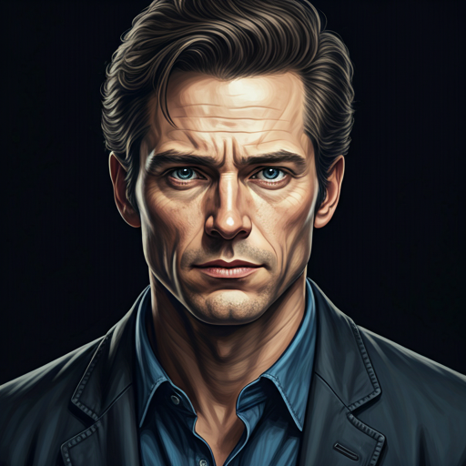
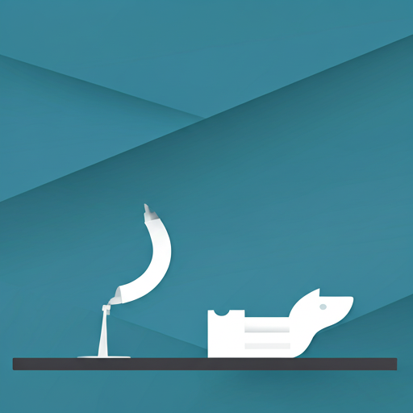
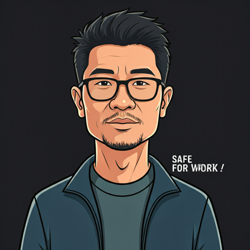

Julian Vance
CURADOR PRINCIPAL Y FUNDADORJulian supervisa la integridad arquitectónica de nuestros flujos de trabajo de servicio, garantizando que cada interacción con el cliente cumpla con nuestro estándar característico de precisión.
En Curatorial, no solo brindamos servicios; diseñamos entornos. Nuestro equipo combina el dominio técnico con una mirada editorial para seleccionar experiencias que definan la excelencia moderna.


Julian supervisa la integridad arquitectónica de nuestros flujos de trabajo de servicio, garantizando que cada interacción con el cliente cumpla con nuestro estándar característico de precisión.
Con experiencia en hospitalidad de lujo, Elena cierra la brecha entre la excelencia logística y la prestación de servicios centrada en el ser humano.

Marcus diseña la infraestructura digital patentada que permite a nuestros curadores ejecutar solicitudes de servicio complejas sin fricción.
Siempre estamos buscando mentes precisas que entiendan que el servicio es una forma de arte. Explora nuestros roles abiertos.